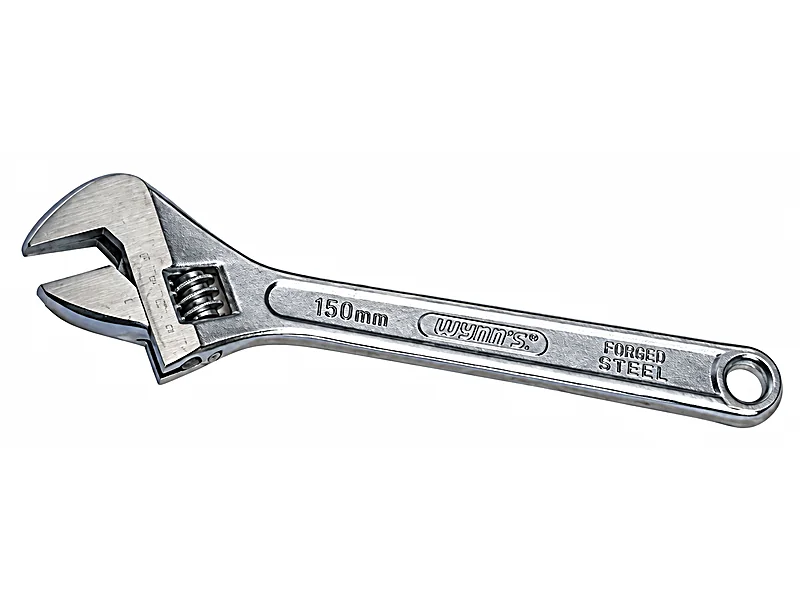
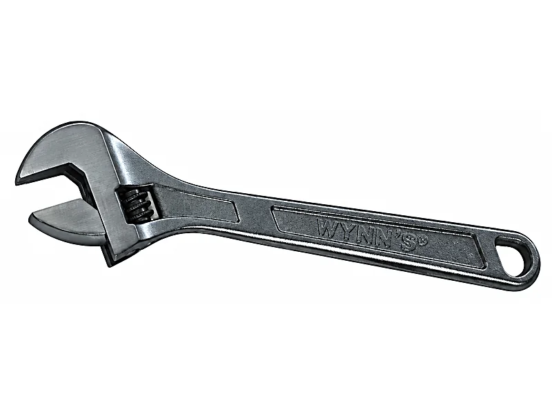

วิธีดูแลเครื่องมือช่างไม่ให้เป็นสนิม
เครื่องมือช่างที่ขึ้นสนิมใช้งานฝืด จับชิ้นงานไม่อยู่ และอายุสั้นลง บทความนี้อธิบายวิธีดูแลเครื่องมือช่างไม่ให้เป็นสนิม ตั้งแต่การเช็ดและลงน้ำมันหลังใช้ การเก็บให้ถูกที่ ไปจนถึงวิธีขัดสนิมที่เกิดแล้ว และวัสดุอย่าง CR-V SK-55 และสแตนเลสต่างกันยังไงเรื่องสนิม
ทำไมเครื่องมือถึงเป็นสนิม
สนิมเกิดเมื่อเหล็กโดนความชื้นกับอากาศนานพอ อากาศเมืองไทยชื้นเกือบทั้งปี เครื่องมือที่เปียกเหงื่อ โดนฝน หรือเก็บไว้ในที่อับจึงขึ้นสนิมเร็ว คราบที่ติดมากับงาน เช่น ปูน ดิน ปุ๋ย และน้ำเกลือ ยิ่งทำให้เกิดสนิมเร็วขึ้น
เครื่องมือช่างส่วนใหญ่ทำจากเหล็กกล้า ไม่ใช่สแตนเลส ผิวชุบหรือผิวรมดำช่วยกันสนิมได้ระดับหนึ่ง แต่ถ้าผิวถลอกหรือไม่ได้ดูแล เนื้อเหล็กด้านในก็ขึ้นสนิมได้
วัสดุที่เขียนบนเครื่องมือ บอกอะไร
| วัสดุ | ใช้ทำอะไรในแคตตาล็อก | เรื่องสนิม |
|---|---|---|
| CR-V (โครเมียม-วาเนเดียม) | ประแจ ลูกบล็อก และไขควงเกือบทั้งหมด | เหล็กกล้าผสม แข็งแรง แต่ไม่ใช่สแตนเลส มักชุบโครเมี่ยมหรือรมดำไว้ ถ้าผิวถลอกต้องเช็ดน้ำมัน |
| SK-55 / SK-5 | คีม คัตเตอร์ และใบมีด แคตตาล็อกระบุว่าเป็นเหล็กกล้าคาร์บอนสูง | เหล็กคาร์บอนสูงคมและแข็ง แต่ขึ้นสนิมง่ายกว่าเหล็กผสม ควรเช็ดแห้งและลงน้ำมันบางๆ เสมอ |
| เหล็กแมงกานีส #65 | เครื่องมือการเกษตร เช่น กรรไกรตัดกิ่ง | โดนดิน ยางไม้ และน้ำบ่อย ต้องล้างและเช็ดแห้งหลังใช้ทุกครั้ง |
| สแตนเลส 304 | ชิ้นส่วนเครื่องมือช่างยนต์บางรายการ | ทนสนิมได้ดีที่สุดในกลุ่มนี้ แต่ถ้ามีคราบสกปรกเกาะนานก็เกิดคราบสนิมที่ผิวได้ |
| สแตนเลส 2Cr13 / 3Cr13 / 4Cr13 | ฉากผสมและฉากสามเหลี่ยม ใบมีด กรรไกร | สแตนเลสชนิดชุบแข็งได้ แข็งกว่า 304 แต่ทนสนิมน้อยกว่า ควรเช็ดให้แห้งหลังใช้ |
| ทองเหลือง / อลูมิเนียม | กุญแจทองเหลือง ระดับน้ำอลูมิเนียม | ไม่มีเหล็กผสม จึงไม่ขึ้นสนิมแดง แต่ผิวอาจหมองได้ |


ดูแลหลังใช้งานทุกครั้ง
เช็ดคราบออก
เช็ดปูน ดิน ยางไม้ และเหงื่อออกให้หมด คราบพวกนี้อมความชื้นไว้ที่ผิวเหล็ก ถ้าคราบแข็งให้ใช้แปรงขนแข็งปัด
เช็ดให้แห้ง
ถ้าล้างน้ำหรือโดนฝน เช็ดให้แห้งทันที รวมถึงร่องข้อต่อคีม เกลียวประแจเลื่อน และใต้ด้ามจับ ที่น้ำชอบค้าง
ลงน้ำมันบางๆ
ใช้ผ้าชุบน้ำมันหล่อลื่นชนิดบางหรือสเปรย์กันสนิม เช็ดให้ทั่วผิวโลหะ แล้วเช็ดส่วนเกินออก ไม่ต้องให้เยิ้ม ไม่ควรใช้น้ำมันพืชเพราะจะเหนียวและมีกลิ่นเมื่อเก็บนาน
หยอดน้ำมันจุดที่ขยับ
คีม คีมล็อก กรรไกร และประแจเลื่อน หยอดน้ำมันที่หมุดย้ำหรือเกลียวแล้วขยับเปิดปิดสองสามครั้ง จะใช้งานลื่นและกันสนิมในร่องได้
เก็บให้ถูกที่
เก็บเครื่องมือในที่แห้งและอากาศถ่ายเท ยกขึ้นจากพื้นปูน ไม่วางรวมกับถุงปูน ปุ๋ย หรือสารเคมี ถ้าเก็บในกล่องหรือกระเป๋าเครื่องมือ ใส่ซองกันชื้นไว้ด้วยและเปลี่ยนเมื่อหมดสภาพ อย่าเก็บเครื่องมือที่ยังเปียกในกล่องปิด
ร้านค้าที่เก็บสต็อกเครื่องมือจำนวนมาก วางลังบนพาเลทหรือชั้นที่ยกจากพื้น ห่างจากหน้าร้านที่ฝนสาด ขายของที่เข้าก่อนออกก่อน และเช็ดน้ำมันสินค้าตัวโชว์ที่ลูกค้าจับบ่อยเป็นระยะ
ถ้าขึ้นสนิมแล้ว ทำยังไง
สนิมผิวบางๆ
ขัดด้วยฝอยขัดเหล็กหรือแปรงลวดชุบน้ำมัน จนเห็นเนื้อเหล็ก แล้วเช็ดสะอาดและลงน้ำมันบางๆ
สนิมหนา
ใช้น้ำยาล้างสนิมตามวิธีบนฉลาก ล้างน้ำยาออกให้หมด เช็ดแห้ง แล้วลงน้ำมันทันที เพราะผิวเหล็กที่เพิ่งล้างจะขึ้นสนิมใหม่ได้เร็ว
ผิวชุบโครเมี่ยม
อย่าขัดแรงด้วยกระดาษทรายหยาบ จะทำให้ผิวชุบหลุดและขึ้นสนิมหนักกว่าเดิม ใช้ผ้าชุบน้ำมันหรือฝอยขัดละเอียด
ถ้าสนิมกินลึกจนปากคีมหรือปากประแจเป็นหลุม จับชิ้นงานไม่อยู่หรือเห็นรอยร้าว ควรเปลี่ยนเครื่องมือใหม่ เพราะอาจลื่นหรือหักระหว่างใช้งาน
คำถามที่ถามกันบ่อย
เครื่องมือเป็นสนิมแล้วยังใช้ได้ไหม
ถ้าเป็นสนิมแค่ผิว ขัดออกแล้วลงน้ำมันก็ใช้ต่อได้ ถ้าสนิมกินลึกจนปากเป็นหลุมหรือมีรอยร้าว ควรเปลี่ยน
ใช้น้ำมันอะไรกันสนิมเครื่องมือ
น้ำมันหล่อลื่นชนิดบางหรือสเปรย์กันสนิมสำหรับโลหะ เช็ดให้เป็นฟิล์มบางๆ ไม่ควรใช้น้ำมันพืช
CR-V เป็นสนิมไหม
เป็นได้ CR-V เป็นเหล็กกล้าผสม ไม่ใช่สแตนเลส จึงมักชุบโครเมี่ยมหรือรมดำมา ถ้าผิวถลอกหรือเก็บที่ชื้นก็ขึ้นสนิมได้
สแตนเลสไม่เป็นสนิมจริงไหม
ทนสนิมกว่าเหล็กทั่วไปมาก แต่ไม่ใช่กันได้ร้อยเปอร์เซ็นต์ สแตนเลสชนิดชุบแข็งที่ใช้ทำใบมีดและฉาก เช่น 2Cr13 ถึง 4Cr13 ทนสนิมน้อยกว่าสแตนเลส 304 ควรเช็ดแห้งหลังใช้
ซื้อเครื่องมือไปขายต่อ เก็บสต็อกยังไงไม่ให้ขึ้นสนิม
เก็บลังในกล่องเดิม ยกจากพื้น ห่างจากจุดที่โดนฝนหรือความชื้น ขายของเข้าก่อนออกก่อน และเช็ดน้ำมันสินค้าตัวโชว์เป็นระยะ
อ่านต่อ
มีคำถามเรื่องวัสดุหรือการดูแล? ถามทาง LINE
ส่งรหัสหรือรูปเครื่องมือมา ทีมงานสำเพ็งตอบให้